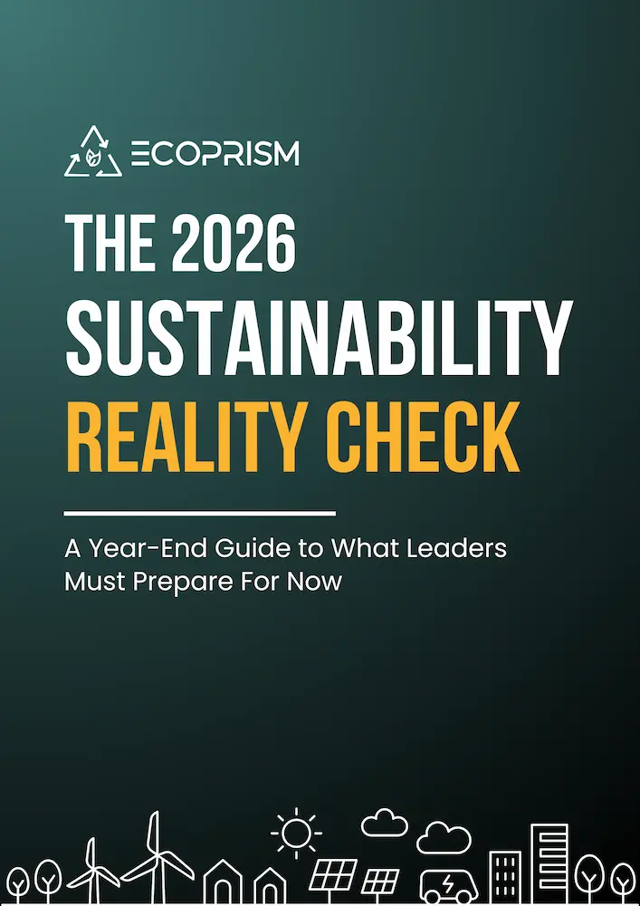

A Year-End Guide to What Leaders Must Prepare for Now
Download Now
Most organizations have sustainability strategies. Very few are ready to execute when scrutiny intensifies.
This executive guide identifies what leaders must address now to build execution readiness in 2026.
In 2026:
The risk isn't missing a target.
The risk is running higher operating costs, missing efficiency gains, and being seen as unprepared, inconsistent, or unreliable when scrutiny increases.
Organizations will either operationalize sustainability — or be exposed by it.
ecoPRISM revolutionizes sustainability management for enterprises by automating data collection, generating advanced insights, and facilitating scenario simulations for actionable strategies. With a SaaS-based approach, ecoPRISM empowers businesses to set and monitor ambitious targets while ensuring compliance with regulatory requirements, including the new CSRD regulation. As business leaders navigate their ESG transformation journey, ecoPRISM provides essential tools and expertise for sustainability success.